الأصل والتاريخ 空手
نشأت الكاراتيه في جزيرة أوكيناوا اليابانية وتم تطويرها من الفنون القتالية الصينية. اسمها يعني "اليد الفارغة" لأن المقاتل يستخدم جسده فقط دون سلاح.
أكاديمية الكاراتيه بمركز شباب الأحمدية تجمع بين الأصالة اليابانية والاحترافية الحديثة. نُعلّم فنون الكاراتيه بكل أنواعها من الكيوكوشين إلى الشوتوكان، ونهتم بكل تفصيلة من أول حزام أبيض إلى الحزام الأسود الدان.
نبذة عن تاريخ اللعبة وفلسفتها وأسلوبها
نشأت الكاراتيه في جزيرة أوكيناوا اليابانية وتم تطويرها من الفنون القتالية الصينية. اسمها يعني "اليد الفارغة" لأن المقاتل يستخدم جسده فقط دون سلاح.
الكاراتيه ليست قتالاً بل طريق حياة. تقوم على مبادئ الاحترام والتواضع والانضباط والسيطرة على النفس قبل الخصم. الهدف الأسمى هو صناعة الإنسان قبل المقاتل.
أشهر مدارس الكاراتيه: الشوتوكان، الكيوكوشين، الوادو-ريو، والغوجو-ريو. كل مدرسة تتميز بأسلوبها في الكاتا والقتال والتحمل الجسدي.
تنقسم الكاراتيه إلى كيهون (أساسيات)، كاتا (أشكال)، وكوميتيه (قتال). كل نوع يُطوّر جانباً مختلفاً من قدرات اللاعب الفنية والذهنية والبدنية.
الكاراتيه رياضة أولمبية معترف بها دولياً، أُدرجت رسمياً في أولمبياد طوكيو 2020. تعتمد على استخدام اليدين والقدمين والركب والأكواع في الهجوم والدفاع، وتُمارَس بأنماط محددة تُسمى الكاتا وهي سلاسل من الحركات المتسلسلة الرمزية التي تحاكي قتالاً مع تخيل عدة خصوم.
في أكاديميتنا نلتزم بمنهج تدريبي متدرّج يبدأ بتعليم اللاعب الوقفة الصحيحة (داتشيو-واتاش) ثم الانتقال إلى الحركات الأساسية من لكمات وركلات وصدات، فالتطبيق في الكاتا، ثم القتال الموجه (الكوميتيه) بعد إثبات السيطرة والإتقان.
شاهد الأنيميشن التفاعلي لكل حركة من حركات الكاراتيه الأساسية
دليل عملي مقسّم إلى ثلاث مراحل: التهيئة، الوقفات، والحركات
صفاء الذهن وتجهيز الجسد قبل بدء التدريب
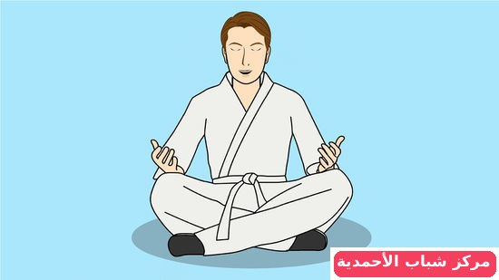
1خصّص خمس دقائق لصفاء الذهن والتركيز على التنفس قبل بدء التدريب. تخيّل كرة من اللهب تبدأ النمو داخلك كرمز للقوة المراد تحقيقها. التأمل يهيّئ العقل والجسد معاً للتدريب المركّز.
⏱️ 5 دقائق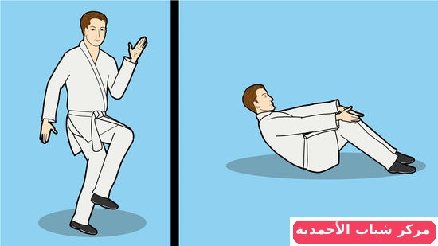
2قُم بعشر دقائق من الجري الخفيف وتمارين الضغط وتمارين البطن ورفع الساق لتجهيز العضلات ورفع نبض القلب. التسخين ضروري لتجنب الإصابات ويزيد من كفاءة التدريب.
⏱️ 10 دقائق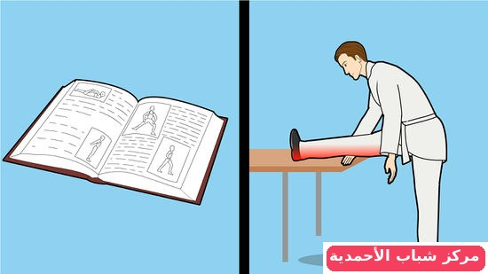
3خصّص خمس عشرة دقيقة بعد التسخين لتمارين التمدد، مع التركيز على الساقين لحمايتهما من الإصابات. التمدد يزيد مرونة الجسد ويحسّن أداء الركلات والوقفات.
⏱️ 15 دقيقة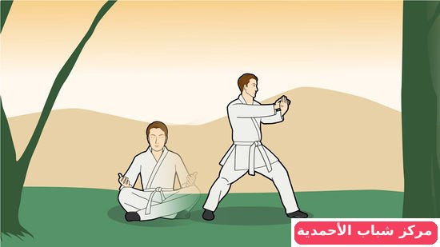
4الكاراتيه رياضة تهتم بالسلام والسلام العقلي، تطوّر الجسد والعقل والروح معاً، وتقوم على الاحترام والتواضع والانضباط. الفهم العميق للفلسفة يصنع المقاتل الحقيقي.
🧘 عقل وروحالأساس الذي تقوم عليه كل الحركات الهجومية والدفاعية
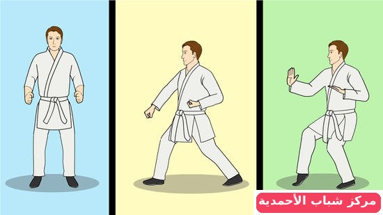
5تعلّم ثلاث وقفات رئيسية: الوقفة الطبيعية أو المشي (شيزين تاي داتشي)، الوقفة الأمامية (زين كوتسو داتشي)، ووقفة القط أو الخلفية (نيكو أشي داتشي). كل وقفة لها استخدامها في الهجوم والدفاع.
🥋 3 وقفات أساسية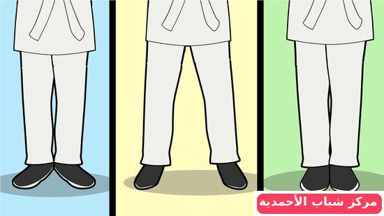
6ثلاث مجموعات تبدأ بها تدريبك: مجموعة الفوك يو جاتا، مجموعة البي نان، ومجموعة الناي هان تشي. كل مجموعة تُعدّ أساساً للكاتا وتمهيداً للوقفات المتقدمة.
🐺 3 مجموعات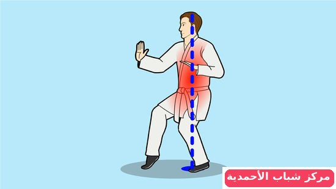
7توسيط الجسد ضروري للتحرك بقوة ورشاقة. فكّر في "الثقل المركزي" للجسد ومارس الانتقال السريع بين الوقفات دون فقدان التوازن. التوازن أساس القوة في الكاراتيه.
⚖️ ثقل مركزي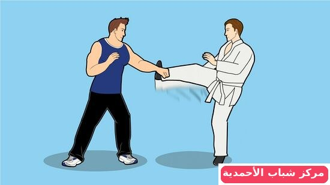
8الكاراتيه لا يحتاج عضلات كثيفة بل قدرة على تحريك أجسام صغيرة بسرعة وبدقة هائلة. ركّز على سرعة الأداء ودقة الحركة بدلاً من القوة العضلية المفرطة. السرعة قوة في الكاراتيه.
⚡ سرعة ودقةاللكمات والركلات والصدات ثم الكاتا والكوميتيه
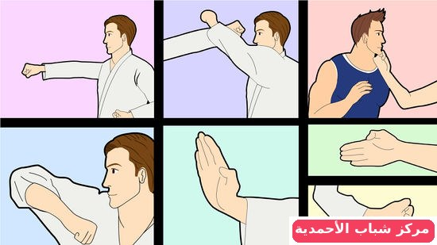
9خصّص خمس عشرة دقيقة لللكمات الأساسية: المستقيمة، الصاعدة، سيف اليد، رمح اليد، الكوع، وقبضة الظهر. تدرّب أيضاً على الصدات لحماية وجهك وجسمك من الهجمات.
⏱️ 15 دقيقة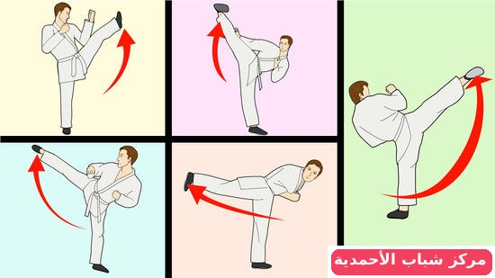
10خمس ركلات أساسية: الخطافية الأمامية، الخطافية الجانبية، التوجه الجانبية، التوجه الخلفية، والمستديرة. تدرّب على كل ركلة ببطء أولاً لإتقان التكنيك ثم ارفع السرعة تدريجياً.
🦵 5 ركلات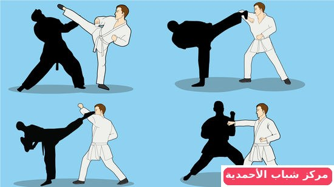
11خصّص من خمس عشرة إلى ثلاثين دقيقة مع شريك تدريبي لتطبيق التقنيات وزيادة التحمل البدني. الكوميتيه يطوّر سرعة ردة الفعل والقدرة على التطبيق في موقف حقيقي.
⚔️ قتال موجه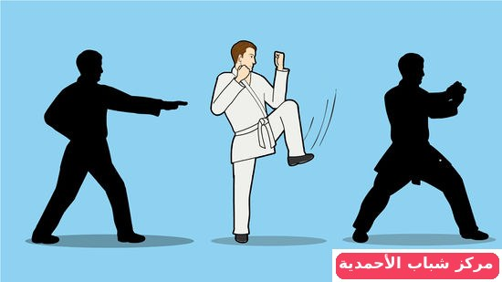
12الكاتا تسلسل من الحركات المتسلسلة الرمزية. أتقن كاتا واحدة في كل جلسة تدريبية، وراجع الكاتا المتقنة دورياً للحفاظ على دقة الأداء. الكاتا روح الكاراتيه.
🀄 روح الكاراتيهدليل شامل لفهم الأنماط والعناصر والحركات الأساسية في 10 خطوات
أصول الفن القتالي وأنماطه وعناصره الأساسية
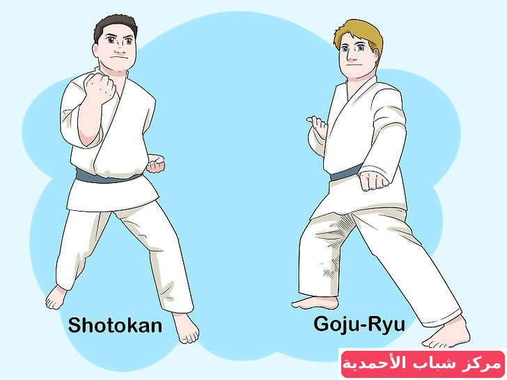
1جذور الفن القتالي صينية لكنه تطوّر في أوكيناوا اليابانية حوالي 1600 كطريقة للدفاع عن النفس بعد تجريم الأسلحة، ويُترجم الاسم إلى "اليد الخالية". من أشهر الأنماط: الشوتوكان (أول أنماط الكاراتيه الحديث، واضعه جيتشين فوناكوشي) بحركات قوية مستمرة، وجوجو-ريو الذي يدمج أساليب الكيمبو الصينية مع الحركات الخطية الصعبة والدائرية الناعمة.
🥋 شوتوكان وجوجو-ريو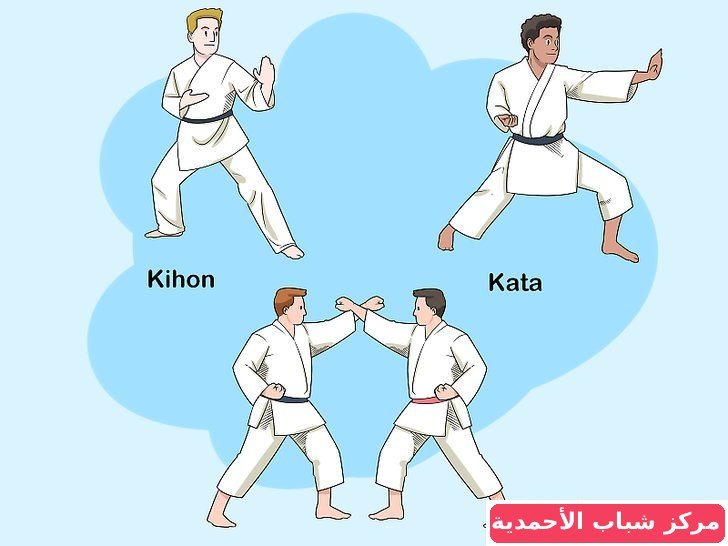
2التدريب في الكاراتيه يقوم على أربعة جوانب أساسية: الكيهون (الأساليب الأساسية)، والكاتا (الصورة أو النمط)، والبونكاي (دراسة الأساليب المرتبطة بالكاتا وتطبيقها)، والكوميت (السجال الحر). كل عنصر يكمّل الآخر ولا يمكن إتقان الكاراتيه دون إتقانها جميعاً.
🔢 4 عناصر أساسية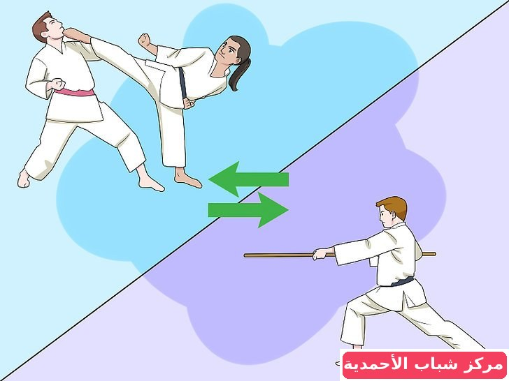
3الكاراتيه يركّز على حركات الضرب وأساليب اليد المفتوحة: اللكمات والركل والضرب بالركبة والمرفق. مقارنةً بالإيكيدو (مراوغة وضم مفاصل ورَميات)، والجودو (رَميات وتصارع)، والكونغ فو (فن صيني متعدد الأنماط يستلهم حركات الحيوانات). للكاراتيه نظام أحزمة ملونة خاص: الأبيض للمبتدئين والأسود للمستوى المتقدم.
🆚 مقارنة بالفنون الأخرىالكيهون والكاتا والبونكاي والكوميت
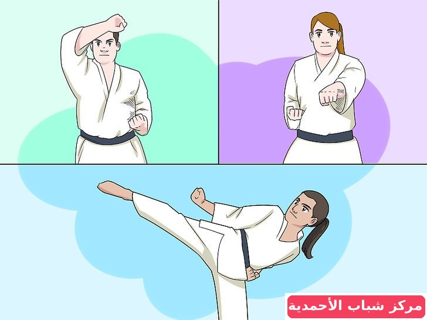
4الكيهون يُترجم إلى "الأساليب الأساسية" وهو الأساس الذي يُبنى عليه الكاراتيه. تتعلّم فيه اللكم والصد والركل والحركة. تدريبات السينسي قد تبدو مملة لكنها ضرورية لاحتراف الكاراتيه، فالطلاب يتدرّبون عليها بشكل متكرر حتى تترسّخ في أجسادهم وعقولهم وتصبح رد فعل تلقائي.
🥋 أساس كل شيء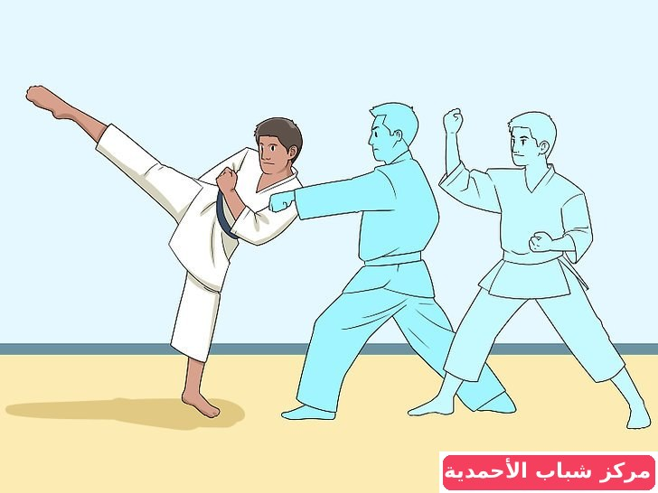
5الكاتا تُترجم إلى "الصور" وتبنى على الأساليب الأساسية، تجمعها في حركة سلسة. كل كاتا تدور حول خطة قتال معينة تتدرّب عليها ضد خصوم خياليين. الكاتا طريقة ينقل بها المعلمون المعرفة، تتعلّم فيها سلسلة من الصدات والضربات والرَميات والركلات في تسلسل محفوظ.
📜 خطة قتال متسلسلة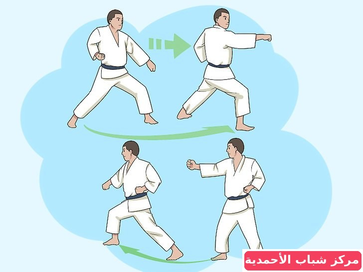
6البونكاي يُترجم إلى "التحليل" أو "التفكيك"، ويتضمن العمل مع الآخرين لفهم التطبيق الواقعي للكاتا. تُحلّل كل حركة في كاتا معينة وتُطوّر التطبيقات المحتملة في مواقف حقيقية. هو خطوة انتقالية إلى الكوميت، ويُمكن تصوّره كاستخدام خطوات الباليه في رقصة واحدة تروي قصة.
🔍 تفكيك الكاتا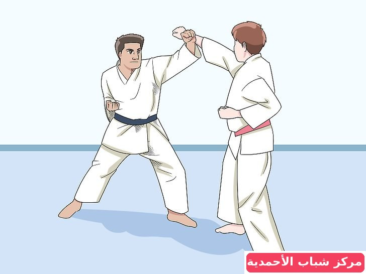
7الكوميت تعني "السجال"، يتعلّمه الطلاب بالتدرّب على الأساليب ضد بعضهم وأحياناً في بطولات. هو تطبيق الكيهون والبونكاي في ظروف تحت التحكم، وأقرب للمعركة الحقيقية لوجود متدربَين يؤديان الحركات على بعضهما. يؤدّى أحياناً بالتبادل (دوكوميت) كخطوة نحو القتال الحر مع نظام نقاط.
⚔️ سجال تحت التحكماللكمات والصدات والركلات
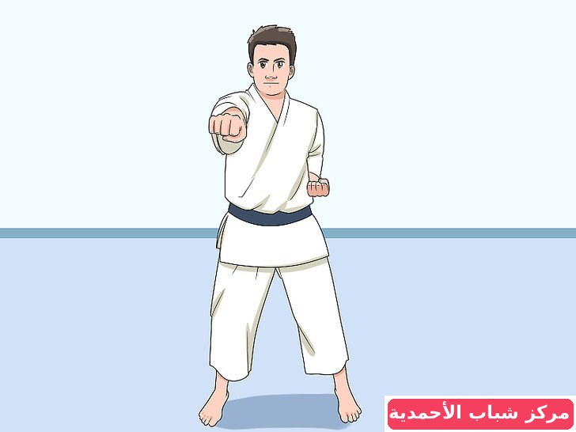
8لكمات الكاراتيه تستخدم اللكم المباشر مع لفّ الرسغ قرب نقطة التصادم. اضرب دائماً بأول عقلتين واحرص ألا يكون المرفق مضموماً لتجنّب الإصابة. اسحب القبضة التي لا تلكم للخلف نحو الخصر (الهيكيتي) — يضيف قوة للضربة عبر تأثير السحب والدفع. ادمج الكياي: "كي" تعني الطاقة و"أي" تعني ربط، وهو الصوت عند تنفيذ حركة هجومية.
👊 لكم + كياي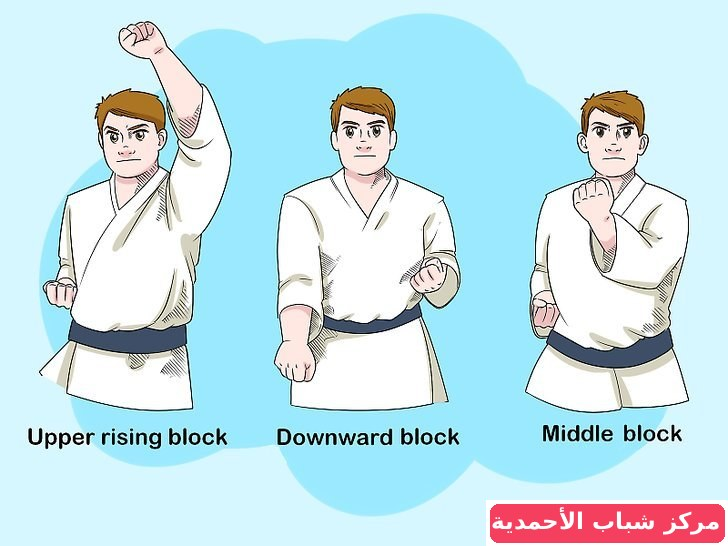
9عدد من أساليب الصد الأساسية للدفاع عن النفس في أي موقف، لأن الكاراتيه أساساً للدفاع لا الهجوم: الصد المتصاعد (جودان إيج أوك) للصد من أعلى، الصد الأوسط (شودان إيج أوك) لصد الضربات الوسطى، والصد السفلي (جيدان إيج أوك) لصد الضربات السفلية.
🛡️ 3 صدات أساسية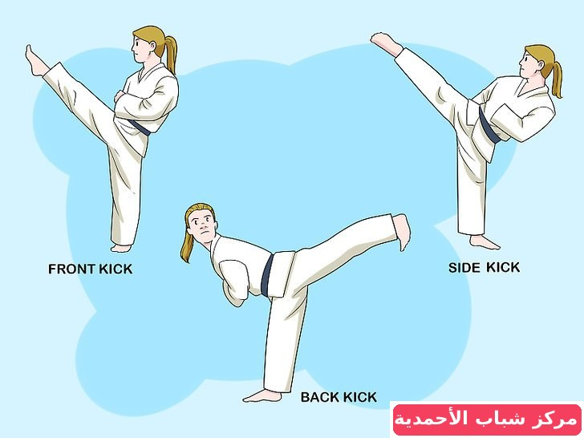
10الركلات تستخدم لإبقاء مسافة بينك وبين المهاجم أو كبديل حين لا يستطيع الجزء العلوي تنفيذ الحركة: الركلة الأمامية (ماي جيري) اضرب بمشط القدم، الركلة الجانبية (يوكو جيري) اضرب بحدّ القدم، الركلة الواسعة (ماواشي جيري) اضرب بمشط القدم ولف الأصابع لأعلى ثم للجانب، الركلة الخطافية (أورا ماواشي جيري) ركلة واسعة معكوسة، وركلة خلفية (أوشيرو جيري) اضرب بكعبك.
🦵 5 ركلات أساسيةمن الحزام الأبيض للمبتدئ إلى الحزام الأسود للمعلم
نظام الأحزمة في الكاراتيه يقسّم رحلة اللاعب إلى مراحل كيو (Kyu) وهي مراحل التلميذ قبل الحزام الأسود وتُرقّم تنازلياً من 10 إلى 1، ثم مراحل دان (Dan) وهي درجات المعلمين وتُرقّم تصاعدياً من 1 إلى 10. الألوان التالية تمثّل المراحل الرئيسية وكل لون يغطي عادة درجتين أو أكثر من الكيو.
مدرّبة معتمدة حاصلة على الحزام الأسود دان وشهادات تدريب دولية وقومية
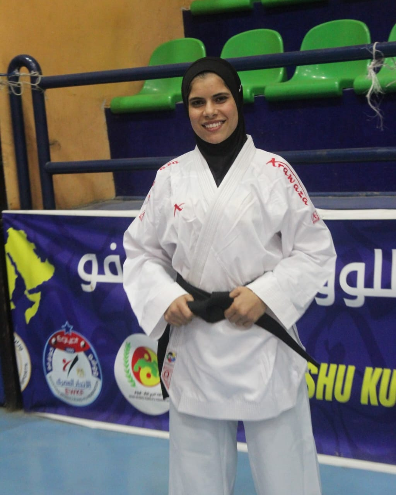
مدربة كاراتيه معتمدة من الاتحاد المصري للكاراتيه ومن النقابة العامة للأكاديميات الرياضية، حاصلة على الحزام الأسود (الدان الأول) منذ عام 2006. خبرة تدريبية تمتد لأكثر من 18 عاماً في إعداد الناشئين والناشئات، أعدّت فرقاً حصدت ميداليات في بطولات المحافظة والجمهورية. متخصصة في تدريب الكاتا والكوميتيه وتمتلك شهادات تدريب دولية (DOKCAP) وشهادة حكم وتحكيم معتمدة من الاتحاد المصري للكاراتيه.
نماذج من شهادات الاعتماد والتقدير التي حصل عليها طاقم التدريب
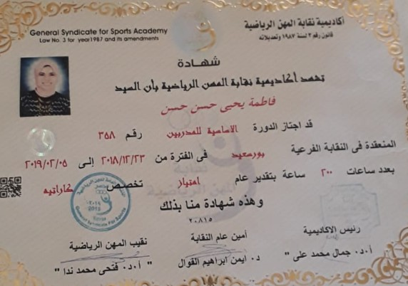
جهة الإصدار: النقابة العامة للأكاديميات الرياضية • ساري 2018 – 2020
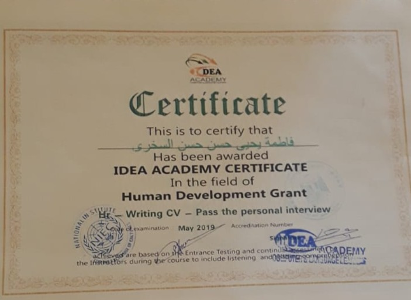
جهة الإصدار: أكاديمية IDEA • مايو 2019
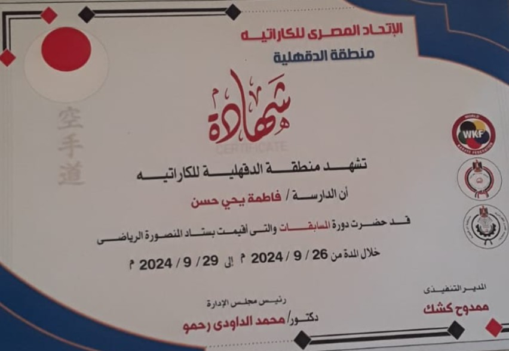
جهة الإصدار: الاتحاد المصري للكاراتيه - منطقة التدريب • 26 – 29 سبتمبر 2024
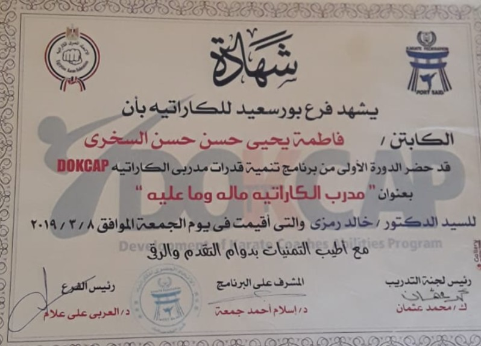
جهة الإصدار: برنامج DOKCAP - بورسعيد • 26 مارس 2019
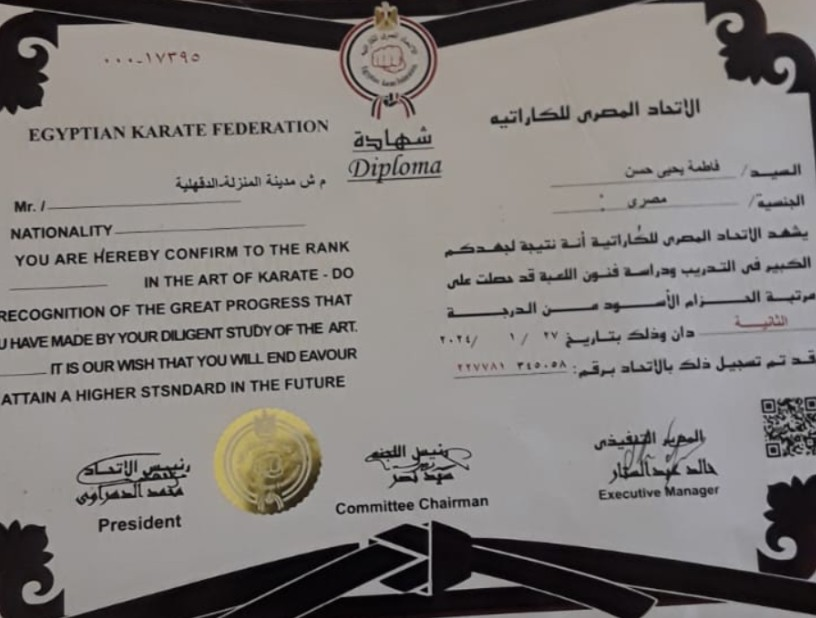
جهة الإصدار: الاتحاد المصري للكاراتيه • 27 يناير 2006
صور من لاعبي الأكاديمية في مراحل الحزام المختلفة
تواصل مع إدارة الأكاديمية للتسجيل أو الاستفسار عن مواعيد التدريب
أكاديمية الكاراتيه بمركز شباب الأحمدية تستقبل الناشئين والشباب من جميع الأعمار. التدريب على مدار الأسبوع بفترتين صباحية ومسائية. للتسجيل أو الاستفسار عن الرسوم والأنظمة التدريبية تواصل مباشرة مع إدارة الأكاديمية.